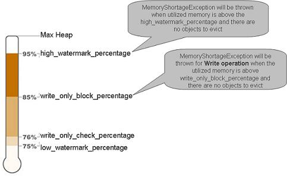
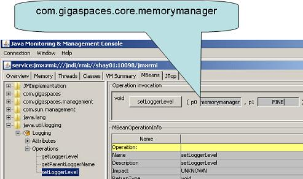
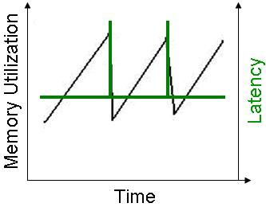
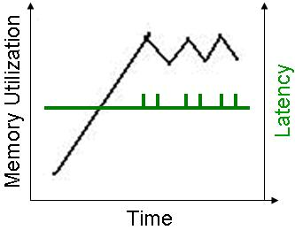
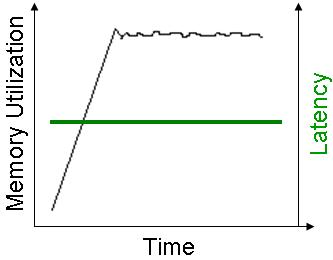

Section Summary: The LRU Cache policy
Overview
When running in LRU cache policy mode, the space evicts the "oldest" objects from its memory. "Oldest" objects are determined by the time they were written, updated or read in the space. In a persistent space mode, evicting a space object means that a space object is simply be removed from the space memory, but is still be available through the underlying RDBMS. The space reloads this object back into the space memory only if it was requested by a specific read operation.
The space memory manager uses a dedicated thread called Evictor - this thread handles the eviction of objects and identifying memory shortage events. In general, eviction can be done using:
- Max amount of space objects - evicts objects one by one. Does not use batches. Very moderate mechanism. Turned on by default when running in LRU mode.
- Available memory - eviction is done in batches.
Evicting an object from the space requires the space engine to lock the LRU chain during the object removal, and to update the relevant indexes. This means that the eviction based on available memory that is done in batches, might impact the space responsiveness to client requests. Still, you might need to use this in case you can't estimate the amount of objects within the space.
How LRU Eviction Works
LRU eviction has 2 eviction strategies:
1. Based on the maximum amount of objects within the space - provides VERY deterministic behavior of the garbage collection and memory used and space responsively. With a reasonable client request rate, this provides very constant behavior without client hiccups when memory is reclaimed by the JVM. This runs by default when you have an LRU cache policy. In order to turn it off, you should have a very large number for the cache size property.
This strategy checks the amount of space objects, and evicts the relevant object. One object is evicted when the maximum amount of objects is reached. This eviction routine is called when:
- Writing a new object into the space.
- A transaction is committed or rolled-back.
2. Based on the amount of available memory the JVM hosting the space has - when using this strategy, you should perform some tuning to provide deterministic behavior. This strategy is turned on when the space-config.engine.memory_usage.enabled value is true. This strategy is very complicated to use when you have multiple spaces running within the same JVM.
The Eviction Flow
LRU eviction based on the amount of available memory, performs the following:
- Check used memory. If not breached, the space-config.engine.memory_usage.high_watermark_percentage exits. If yes, it starts the eviction cycle:
Start eviction loop
- Evicts a batch - this releases objects from the space.
- Objects evicted? If not - exit the eviction loop.
- Wait for the JVM to start garbage collection to reclaim the released memory. The more objects are evicted in one batch, the more time it takes to reclaim the memory. This wait time is configured using the space-config.engine.memory_usage.retry_yield_time parameter. This step makes sure that the eviction cycle does not evict too many objects. This problem manifests itself when the check used memory phase is called, where the memory of the evicted objects has not been reclaimed yet, causing the JVM to return a wrong result for the used memory.
- Check used memory. See below for the exact calculation that is performed.
- If the amount of memory used has been breached, the low watermark percentage then exits the eviction loop.
- Increase the eviction counter by one value.
- If the eviction counter value is larger than space-config.engine.memory_usage.retry_count, throw a MemoryShortageException.
End eviction loop
- If the amount of memory used, is above the space-config.engine.memory_usage.high_watermark_percentage (for a non-write operation), or the space-config.engine.memory_usage.write_only_block_percentage (for a write operation) - throw a MemoryShortageException.
The used memory rate is calculated via:
Used_memory_rate = (Runtime.totalMemory() - Runtime.freeMemory() * 100.0) / Runtime.maxMemory()
SpaceMemoryShortageException
The org.openspaces.core.SpaceMemoryShortageException (which wraps the com.j_spaces.core.MemoryShortageException) is thrown when:
- There are no more space objects to evict and the utilized memory is above the space-config.engine.memory_usage.high_watermark_percentage threshold.
- There are no more space objects to evict and the utilized memory is above the space-config.engine.memory_usage.write_only_block_percentage threshold and a write-type operation has been called.

If a client is running a local cache, and the local cache cannot evict its data fast enough, or somehow there is no available memory for the local cache to function, the following is thrown:
org.openspaces.core.SpaceMemoryShortageException: Memory shortage at: host: MachineHostName, container: mySpace_container_container1, space mySpace_container_DCache, total memory: 1527 mb, used memory: 1497 mb
| Note that the _DCache prefix is part of the space name - it indicates that the exception is thrown from the client local cache. In such a case, you should increase the space-config.engine.memory_usage.retry_count to a larger number. See more details at the Moving into Production Checklist page. |
Monitoring the Memory Manager Activity
You can monitor the memory manager activity for a space running in LRU mode by moving the com.gigaspaces.core.memorymanager logging entry to FINE.
It displays log entries when evicting objects (starting, during, and when completing the eviction cycle), and when waiting for incoming activities. See below example for log entries displayed once an eviction cycle is executed:
22:42:44,915 FINE [com.gigaspaces.core.memorymanager] - SpaceName: mySpace Cache eviction started: Available memory[%]85.39833755194752 22:42:44,917 FINE [com.gigaspaces.core.memorymanager] - Call evict on operation: true 22:42:44,925 FINE [com.gigaspaces.core.memorymanager] - Batch evicted size=500 22:42:44,926 FINE [com.gigaspaces.core.memorymanager] - Call evict on operation: true 22:42:44,929 FINE [com.gigaspaces.core.memorymanager] - rate=85.46128254359517 free-memory=7305896 max-memory=50266112 22:42:44,932 FINE [com.gigaspaces.core.memorymanager] - Call evict on operation: true 22:42:44,938 FINE [com.gigaspaces.core.memorymanager] - SpaceName: mySpace Cache eviction finished: Available memory[%]85.46128254359517 evicted all entries.
You may change the logging level of the com.gigaspaces.core.memorymanager while the space is running. Start JConsole (you may start it via the GigaSpaces Management Center) for the JVM hosting the space running and change the com.gigaspaces.core.memorymanager logging level to FINE. See below screenshot:

| To change the com.gigaspaces.core.memorymanager logging level to its default value set it back to INFO. |
Controlling the Eviction Behavior
The space-config.engine.memory_usage properties provides options for controlling the space memory utilization, and allows you to evict objects from the space. Objects are evicted when the number of cached objects reaches its maximum size, or when memory usage reaches its limit.
These are the default parameters given for memory usage. They should be in the following order:
high_watermark_percentage >= write_only_block_percentage >= write_only_check_percentage >= low_watermark_percentage
See below example how you can configure the LRU eviction settings:
<os-core:space id="space" url="/./mySpace"> <os-core:properties> <props> <prop key="space-config.engine.memory_usage.enabled">true</prop> <prop key="space-config.engine.cache_policy">0</prop> <prop key="space-config.engine.cache_size">5000000</prop> <prop key="space-config.engine.memory_usage.high_watermark_percentage">90</prop> <prop key="space-config.engine.memory_usage.write_only_block_percentage">85</prop> <prop key="space-config.engine.memory_usage.write_only_check_percentage">76</prop> <prop key="space-config.engine.memory_usage.low_watermark_percentage">75</prop> <prop key="space-config.engine.memory_usage.eviction_batch_size">500</prop> <prop key="space-config.engine.memory_usage.retry_yield_time">2000</prop> <prop key="space-config.engine.memory_usage.retry_count">5</prop> <prop key="space-config.engine.memory_usage.explicit-gc">false</prop> </props> </os-core:properties> </os-core:space>
Explicit Eviction of Objects from the Space
If needed, objects can be evicted explicitly from the space by calling the takeMultiple or clear operations on the GigaSpace interface combined with the TakeModifiers.EVICT_ONLY modifier. The clear operation only returns the number of objects actually evicted from the space. The takeMultiple operation returns the actual objects that were evicted. Here's usage example:
Using clear()
GigaSpace gigaSpace = ...; User template = new User(); // Using clear - evicts all the objects of type User from the space int numEvicted = gigaSpace.clear(template, TakeModifiers.EVICT_ONLY);
Using takeMultiple()
GigaSpace gigaSpace = ...; User template = new User(); // Using takeMultiple - evicts all the objects of type User from the space User[] evictedUsers = gigaSpace.takeMultiple(template, Integer.MAX_VALUE, TakeModifiers.EVICT_ONLY);
 It's important to note the following about the TakeModifiers.EVICT_ONLY modifier:
It's important to note the following about the TakeModifiers.EVICT_ONLY modifier:
- It can be used with any take operation - take, takeById, takeMultiple, etc.
- If used with a space running in ALL_IN_CACHE cache policy, an IllegalArgumentException will be thrown when calling the take or clear operations.
- When using this modifier, the timeout argument in operations that allow to specify a timeout, is not honored. The operations will always return immediately.
- When using this modifier, the take or clear calls will never be propagated to the underlying database. So a take operation for example will return null even though a matching object exists in the underlying database
- Object that take part in a transaction at the time of the clear or take calls, will not be evicted from the space
Reloading Data
When a persistent space (using External Data Source, or JDBC Storage Adapter), running in LRU cache policy mode, is started/deployed, it loads data from the underlying data source before being available for clients to access. The default behavior is to load data up to 50% of the space-config.engine.cache_size value.
When the space-config.engine.memory_usage is true (evicting data from the space, based on free heap size), is it recommended to have a large value for the space-config.engine.cache_size property. This instructs the space engine to ignore the amount of space objects when launching the eviction mechanism. This ensures that the eviction is based only on heap size free memory.
The combination of large space-config.engine.initial_load and a large space-config.engine.cache_size, may lead to out-of-memory problems. To avoid this, configure the space-config.engine.initial_load to have a low value. With the example below, each partition will load 100000 objects - 10% out of the space-config.engine.cache_size:
<os-core:space id="space" url="/./mySpace" schema="persistent" external-data-source="hibernateDataSource"> <os-core:properties> <props> <prop key="space-config.engine.memory_usage.enabled">true</prop> <prop key="space-config.engine.cache_policy">0</prop> <prop key="space-config.engine.initial_load">10</prop> <prop key="space-config.engine.cache_size">1000000</prop> <prop key="cluster-config.cache-loader.external-data-source">true</prop> <prop key="cluster-config.cache-loader.central-data-source">true</prop> </props> </os-core:properties> </os-core:space>
The space-config.engine.initial_load_class property can be used to specify specific class(s) data to load.
How can I get Deterministic Behavior During Eviction of Objects?
In order to have deterministic behavior of the memory manager when evicting objects, based on the amount of free memory in such a way that it:
- does not evict too many objects.
- does not consume too much time when reclaiming released objects memory.
- has minimum impact on client response time.
you should:
- have a small eviction batch size - a very good rule of the thumb is the amount of new objects added to the space per second * 2. For example, if clients are adding 1000 new objects to the space per second, and we have 2 partitions, the batch size should be 1000.
- have a sensible time for allowing the GC to reclaim the evicted objects - a very good rule of the thumb is 2 seconds for 1000 objects, for a 5K object size. Needless to say, the CPU speed has an affect here. The recommendation here is good for a 2 MHz Intel CPU.
- limit the amount of objects within the space using the space-config.engine.cache_size parameter - this makes sure that the space does not miss garbage collection. Have some reasonable number here as a protection mechanism.
- have a small amplitude between the high and low watermark percentage - remember that with a 2G heap size, every 1% percent means 20M of memory. Reclaiming such an amount of memory takes 1-2 seconds.
Here are good settings for a JVM with a 2G heap size and a 5K object size. With the following settings, eviction happens once the JVM consumes more than 1.4 G.
<os-core:space id="space" url="/./mySpace" schema="persistent" external-data-source="hibernateDataSource"> <os-core:properties> <props> <prop key="space-config.engine.cache_policy">0</prop> <prop key="space-config.engine.cache_size">200000</prop> <prop key="space-config.engine.memory_usage.enabled">true</prop> <prop key="space-config.engine.memory_usage.high_watermark_percentage">70</prop> <prop key="space-config.engine.memory_usage.write_only_block_percentage">68</prop> <prop key="space-config.engine.memory_usage.write_only_check_percentage">65</prop> <prop key="space-config.engine.memory_usage.low_watermark_percentage">60</prop> <prop key="space-config.engine.memory_usage.eviction_batch_size">2000</prop> <prop key="space-config.engine.memory_usage.retry_count">100</prop> <prop key="space-config.engine.memory_usage.explicit-gc">false</prop> <prop key="space-config.engine.memory_usage.retry_yield_time">4000</prop> </props> </os-core:properties> </os-core:space>
Here are the Java arguments (using incremental GC) to use for the JVM running the Space/GSC:
-Xmx2g -XX:+UseConcMarkSweepGC -XX:+CMSIncrementalMode -XX:ParallelGCThreads=8 -XX:+UseParNewGC -XX:+CMSIncrementalPacing -XX:MaxGCPauseMillis=1000
When there are a small number of objects within the space (less than 50,000), with a relatively large size (100K and above), and you are running with an LRU cache policy, you should:
- have a small value for the space-config.engine.memory_usage.eviction_batch_size. A value of 10 is a good number.
- have a relatively large value for the space-config.engine.memory_usage.retry_yield_time. A value of 200 (ms) is a good number.
Garbage Collection Behavior and Space Response Time Tango
In general, when the JVM garbage collection is called, there is a chance that clients accessing the space are affected.
If the JVM is not using the incremental GC mode (i.e. regular behavior), the GC has the famous chain saw behavior - rapid memory reclaim of the recently evicted/referenced objects. This means a quick garbage collection, potentially having delays at the client side, or phantom OOME in the case that the JVM has not managed to evict fast enough.
See below an example of regular GC behavior, when eviction is going on (based on available memory), and new objects are written into the space:

Incremental GC behavior has more moderate activity with on-going garbage collection, without the risk of missing a garbage collection, and getting OOME - see below for an example of behavior when eviction is going on (based on available memory) and new objects are written into the space:

When the LRU eviction is based on the maximum amount of objects, the memory utilization graph looks like this - a very small amplitude.

This behavior is achieved because the memory manager evicts objects one by one from the space, rather than in batches. So the amount of work the JVM garbage collector needs to perform is relatively small. This also does not affect the clients communicating with the space, and provides a very deterministic response time - i.e. a very small chance of a client hiccup.
| If you can estimate the amount of objects the space holds, and use the eviction based on the maximum number of objects within the space, this allows you to eliminate the hiccups, and provide a very deterministic and constant response time. |
space-config.engine.memory_usage.explicit-gc
The memory manager has a very delicate feature, called the explicit-gc. When enabled, the space performs an explicit Garbage Collection (GC) call before checking how much memory is used. When turned on, this blocks clients from accessing the space during the GC activity. This can cause a domino affect, resulting in un-needed failover, or client total hang. The problem is severe in a clustered environment, where both the primary and backup space JVM make an explicit GC call at the same time, holding back the primary from both serving the client, and from sending operations to the backup.
With a small value for the space-config.engine.memory_usage.retry_yield_time, or when the space-config.engine.memory_usage.explicit-gc is turned off (false as a value), the space might evict most of its data, once the space-config.engine.memory_usage.write_only_block_percentage, or the space-config.engine.memory_usage.high_watermark_percentage is breached.
This happens since the JVM hosting the space might not perform garbage collection immediately between each eviction cycle, resulting in the memory usage remaining intact, causing another eviction cycle to be called.
When using the space-config.engine.memory_usage.explicit-gc option:
- Make sure that -XX:+DisableExplicitGC isn't set.
- Add -XX:+ExplicitGCInvokesConcurrent - this might help to reduce the impact of the System.gc() calls.
- Make sure that System.gc() is called before calculating available memory.